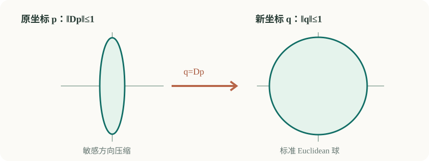

4.5.1 尺度变换：把原坐标中的椭球变成可计算的球
若不同变量的典型变化尺度相差百倍，以一个圆形半径限制它们可能很不合理。正对角尺度矩阵 D 把敏感方向缩短、不敏感方向放宽，并将原坐标的椭球变成新坐标下的标准欧氏球。
同样的绝对步长对不同变量不一定公平
假设一个模型对 x₁ 的小变化十分敏感，对 x₂ 的较大变化才有同等反应。采用 Euclidean 球 ‖p‖₂≤Δ，会允许两个方向相同的绝对位移，但这可能使一条方向上的局部二次近似明显更差。
选正对角矩阵 D=diag(d₁,…,dₙ)，dᵢ＞0，使用 ‖Dp‖₂≤Δ。较大的 dᵢ 意味着在第 i 个原始坐标上允许更短的移动。
换元时必须同时变换梯度和 Hessian
定义缩放坐标 q=Dp，即 p=D⁻¹q。此时 ‖Dp‖≤Δ 变成标准球 ‖q‖≤Δ；但原二次模型 m(p)=fₖ+gᵀp+½pᵀBp 也必须变换为 fₖ+(D⁻¹g)ᵀq+½qᵀ(D⁻¹BD⁻¹)q。
由于这里 D 为正对角矩阵，D⁻ᵀ=D⁻¹。若只把信赖域画成圆而保留旧梯度和旧 Hessian，将求解不同的优化问题。

二维各向异性模型的完全算例
考虑 g=(10,1)、B=diag(100,1)，以及 D=diag(10,1)。原模型第一个方向的曲率是第二个的 100 倍，而新坐标的梯度 ĝ=D⁻¹g=(1,1)、Hessian B̃=D⁻¹BD⁻¹=I。
当 Δ=1，圆内最优点是 q*=(-1/√2,-1/√2)，原坐标步长 p*=(-1/(10√2),-1/√2)。它满足 ‖Dp*‖=1，预测下降为 √2−½≈0.914214。
缩放矩阵如何影响数值求解
在正定模型中，选择与曲率尺度匹配的 D 可以使变换后的 Hessian 条件数更接近 1，减少不同方向的悬殊惩罚。交互例子让第一坐标的 d₁ 在 1 至 10 之间变化，并直接解对应变换后的正定球约束问题。
缩放本身不会把不定 Hessian 变成正定矩阵，也不能保证任何固定规则都改善实际优化效率。若 D 依赖 Hessian 对角线，必须考虑非正数、零元素和不同变量单位。
理论和实践的边界
正对角缩放改变的不是原目标函数本身，而是算法在当前点相信二次模型的区域形状。缩放后的候选仍应通过真实/预测下降比决定是否接受。
本页只处理两个变量、对角正定 B 的独立例子，不提供适合一般高维非凸问题的自适应尺度选取方法。
交互：改变尺度矩阵
固定 Δ=1、g=(10,1)、B=diag(100,1)，调节 D 的第一对角元素，直接计算缩放后的球约束最优步。
Python：变换模型与解的交叉验证
仅使用 Python 标准库，逐项检查坐标换元、半径及预测下降。
"""Scale a 2D SPD trust-region model using q=D*p."""
from math import hypot,sqrt
def solve(d,delta=1.0):
if d<=0 or delta<=0: raise ValueError("positive scale and radius")
grad=(10.0/d,1.0)
curv=(100.0/d**2,1.0)
def scaled(lam):
return (-grad[0]/(curv[0]+lam),-grad[1]/(curv[1]+lam))
if hypot(*scaled(0))<=delta:
lam=0.0
else:
lo,hi=0.,1.
while hypot(*scaled(hi))>delta: hi*=2
for _ in range(80):
mid=(lo+hi)/2
if hypot(*scaled(mid))>delta: lo=mid
else: hi=mid
lam=(lo+hi)/2
q=scaled(lam)
p=(q[0]/d,q[1])
drop=-(10*p[0]+p[1]+.5*(100*p[0]**2+p[1]**2))
return q,p,drop,lam
if __name__=="__main__":
q,p,drop,lam=solve(10)
print(q,p,drop,lam)
assert abs(q[0]+1/sqrt(2))<1e-12
assert abs(q[1]+1/sqrt(2))<1e-12
assert abs(hypot(10*p[0],p[1])-1)<1e-12
assert abs(drop-(sqrt(2)-.5))<1e-12
assert abs(lam-(sqrt(2)-1))<1e-12
for d in (1,2,5,10):
_,p,drop,_=solve(d)
assert hypot(d*p[0],p[1])<=1+1e-10
assert drop>0